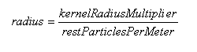
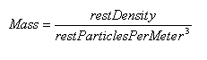
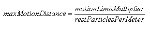

Fluid Particle Interaction
Fluid simulation can occur in two modes, one called SPH
(Smoothed Particle Hydrodynamics)
where interparticle forces are considered (e.g. viscous drag) and
another simple mode where these forces are not considered. SPH is
important when simulating dense collections of particles (e.g.,
liquids) but is not the best for performance; therefore,
simple mode should be used when interparticle forces are not a consideration (e.g., a very thin gas).
Particle interaction is simulated in SPH using a
number of force fields associated with each particle. The
pressure force field has the effect of pushing particles apart and the
viscosity forces have the effect of reducing the relative velocity
between particles.
Surface tension is modeled through an attractive force
between particles. Inside the fluid, the surface tension forces balance
each other out. However, at the surface of the fluid they act in the
opposite direction of the surface normal which tends to reduce the
curvature of the fluid's surface.
When simulating a fluid, the mass of each particle
remains constant; however, the density varies over time due to the
fluid's compressibility. The change in density is therefore
achieved through the movement of particles. An area of the fluid
with high density is caused by a closely packed clump of particles.
Note: Different fluids cannot, at present, interact directly with each other.
Simulation Method
The simulationMethod member of NxFluidDesc controls how the fluid particles will be simulated, either with full particle
interaction or as a set of independent particles.
- NX_F_SPH - simulates the fluid, taking into account particle
interactions.
- NX_F_NO_PARTICLE_INTERACTION - simulates the fluid without interparticle interactions.
- NX_F_MIXED_MODE - alternates between SPH and simple mode
(providing more performance than SPH alone, while maintaining some dense characteristics).
The simulation mode may be adjusted even during simulation using NxFluid::setSimulationMode().
Note that depending on the spatial arrangement of the particles, switching from
NX_F_NO_PARTICLE_INTERACTION or NX_F_MIXED_MODE to NX_F_SPH might lead to an
unstable simulation state.
Example
NxFluidDesc fluidDesc;
fluidDesc.simulationMethod = NX_F_SPH;
Kernel Radius Multiplier
The kernel radius multiplier, along with restParticlesPerMeter, controls
the radius of influence for each particle.

Units: [m] = [unit less] / [m^-1]
Example
NxFluidDesc fluidDesc;
fluidDesc.kernelRadiusMultiplier = 2.3f;
Rest Particles Per Meter
The cubed value of restParticlesPerMeter describes the number of
particles in a cubic meter when the fluid is in its rest state.
Although the parameter is called restParticlesPerMeter, this does not
have to be the case. The user is free to choose whichever units are
appropriate for the simulation as long as they are consistent.
Rest particles per meter has an indirect effect on the mass and radius
of particles, along with the rest density and kernel radius multiplier.

For radius: [m] = [unit less] / [m^-1]
For mass: [kg] = ([kg m^-3]) / [m^-3]
= ([kg m^-3]) * [m^3]
Example
NxFluidDesc fluidDesc;
fluidDesc.restParticlesPerMeter= 10.0f;
Rest Density
The rest density of a fluid defines the mass of a particle along with
the restParticles per meter.
Units: [Kg] = [Kg m^-3] / [m^-3]
Example
NxFluidDesc fluidDesc;
fluidDesc.restDensity = 1000.0f;
Viscosity
Viscosity controls a fluid's thickness. For example, a fluid with a high viscosity
will behave like treacle while a fluid with a low viscosity will be
more runny like water. The viscosity member
scales the viscosity force field which applies force to reduce the
relative velocity of particles within the fluid. If a pair of particles
are close together and have a high viscosity, then a strong force
will be applied to reduce there relative velocity. If they are far
apart and have a low viscosity value, then only a small force will be
applied to reduce there relative motion.
Reasonable values: 5-300
Example
NxFluidDesc fluidDesc;
fluidDesc.viscosity = 22.0f;
Stiffness
The stiffness (or gas constant) influences the calculation of the
pressure force field. Pressure is calculated from
(density-initialDenisty)*stiffness. Low values of stiffness make the fluid more
compressible (i.e., springy), while high values make it less compressible.
The stiffness value has a weighty impact on the numerical stability of
the simulation; setting very high values will result in instability.
Reasonable values: 1-200
Example
NxFluidDesc fluidDesc;
fluidDesc.stiffness = 200.0f;
Damping
The damping parameter is applied similarly to the damping
parameter for rigid bodies. It is used to reduce the
velocity of the particles over time.
Reasonable values: 0-1
Example
NxFluidDesc fluidDesc;
fluidDesc.damping = 0.0f;
External Acceleration
External acceleration is applied directly to particles. It can be used to counteract the effect of gravity or simulate wind, etc.
Units: [m s^-2]
Example
NxFluidDesc fluidDesc;
fluidDesc.externalAcceleration = NxVec3(0.0f,10.0f,0.0f);
Motion Limit Multiplier
The motion limit multiplier defines the maximum motion distance
relative
to the rest spacing of the fluid:

This parameter is set to 3.0 * kernelRadiusMultiplier
by default.
restParticlesPerMeter is the inverted distance (how many particles per
meter) of the fluid in its rest state. Divide the
motionLimitMultiplier by restParticlesPerMeter to get the maximum
distance a particle can move within a timestep.
This can be shown using the units for the above equation: [m] = [unit
less] / [m^-1]
If the
motionLimitMultiplier is set higher, the fluid moves faster. If set
lower,
the static mesh cooked for fluids gets smaller and the collision can be
computed more efficiently.
NOTE: The motionLimitMultiplier, kernelRadiusMultiplier, packetSizeMultiplier and
restParticlesPerMeter have
to be the same for all fluids within a scene to be
compatible with
one shared mesh for fluid collision. In other words, the parameter needs to be
specified during fluid mesh cooking.
Packet Size Multiplier
The packet size multiplier controls the size of packets (groups of fluid
particles) which are sent to the PPU. Increasing the packet size
multiplier results in larger packets, which results in less overhead
associated with managing them. However, this increase will also reduce the opportunities for the fluid to run in
parallel. The multiplier can therefore be used to achieve
faster fluid simulation by tuning it appropriately. Also, a single fluid packet cannot interact simultaneously
with more than 8192 mesh triangles; thus you may need to adjust packet size to correspond to triangle density.
The packet size multiplier must be a power of two.
Flags
Gravity can be disabled using the fluid flags and the
NX_FF_DISABLE_GRAVITY flag.
Example
NxFluidDesc fluidDesc;
fluidDesc.flags |= NX_FF_DISABLE_GRAVITY;
Samples
Sample Particle Fluid
API Reference
Copyright © 2008 NVIDIA Corporation, 2701 San Tomas Expressway, Santa Clara, CA 95050 U.S.A. All rights reserved. www.nvidia.com